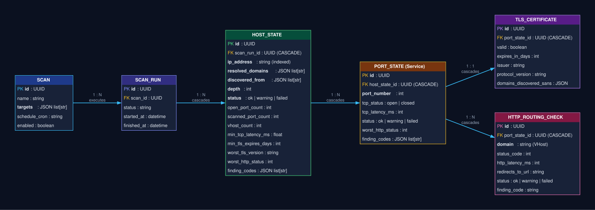
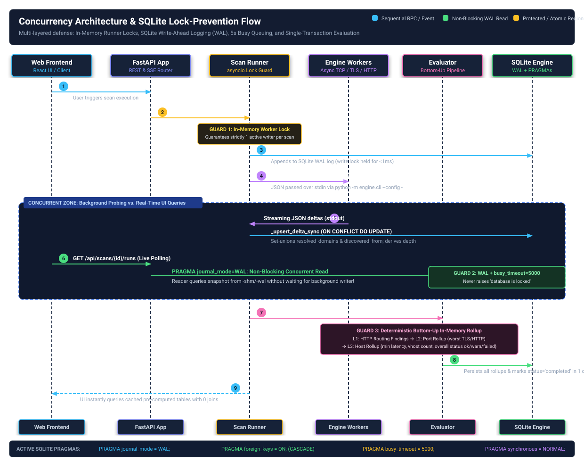

Track 2 of ADR 0023 transitions the scan execution and persistence layer from an ad-hoc, untyped schema to a fully normalized, relational database model with deterministic, bottom-up finding evaluation. Prior to this track, the system suffered from synthetic void nodes (Void (unresolved)), nested dictionary serializers masking raw SQLModel fields, redundant target group indirection tables, and lack of database-level concurrency controls for SQLite.
TargetGroup and ScanTargetGroupLink in favor of Scan.targets: list[str].resolved_domains and discovered_from with graph depth calculation.PRAGMA foreign_keys = ON; with strict cascading deletes on orphans.PRAGMA busy_timeout = 5000; preventing lock-wait exceptions under load.init_db() to backfill columns on existing databases.The normalized schema enforces strict parent-child relationships with cascading deletes. Synthetic void nodes and polymorphic wrapper dictionaries were eliminated.

In asynchronous architectures like FastAPI and asyncio workers, concurrent access to a file-based SQLite database frequently triggers sqlite3.OperationalError: database is locked if multiple workers attempt write operations simultaneously. Track 2 implemented a multi-layered defense to ensure strict thread-safety and high write availability.

Applied via SQLAlchemy @event.listens_for(Engine, "connect") in api/src/api/database.py:
PRAGMA journal_mode=WAL; -- Concurrent readers while writer writes
PRAGMA foreign_keys=ON; -- Relational constraint enforcement
PRAGMA busy_timeout=5000; -- 5s kernel wait queue before lock error
PRAGMA synchronous=NORMAL; -- Optimal durability & async throughputThe execution seam uses an asynchronous locking mechanism per scan ID. This guarantees that background workers never execute conflicting writes to the same scan run, while SQLite's WAL mode allows non-blocking reads by the UI.
The evaluator in api/src/api/services/evaluator.py executes deterministically before a scan run is marked completed. It computes all findings and aggregated state in a single, bottom-up pass:
| Level | Calculated Attributes | Finding Codes Evaluated |
|---|---|---|
| L1: HTTP Routing | finding_codes, redirect_count |
HTTP_SERVER_ERROR, HTTP_CLIENT_ERROR |
| L2: Port State | worst_http_status, tls_expires_days, finding_codes |
TLS_EXPIRED, TLS_EXPIRING_SOON, TLS_DEPRECATED_VERSION,
PORT_CLOSED, PORT_FILTERED, child HTTP findings
|
| L3: Host State |
open_port_count, scanned_port_count, vhost_count,
min_tcp_latency_ms, min_tls_expires_days, worst_tls_version,
worst_http_status, status (ok / warning / critical), finding_codes
|
Aggregated union of all port and routing findings. Evaluates overall host status: critical if any expired TLS or 5xx HTTP; warning if expiring TLS, closed ports, or 4xx HTTP; ok otherwise. |
Error Trace:
sqlalchemy.exc.OperationalError: (sqlite3.OperationalError) table host_states has no column named status
[SQL: INSERT INTO host_states (id, scan_run_id, ip_address, status, ...) VALUES (?, ?, ?, ?, ...)]Root Cause:
SQLAlchemy / SQLModel's SQLModel.metadata.create_all(engine) executes CREATE TABLE IF NOT EXISTS. For developers or environments running against an existing SQLite file (site_health_check.db), newly added columns (status, open_port_count, etc.) were never created.
Correction:
Implemented an automated schema inspector and dynamic DDL patcher inside init_db() in api/src/api/database.py. During application startup, SQLite PRAGMA table inspection detects any missing columns and dynamically issues safe ALTER TABLE <table> ADD COLUMN <col> <type> statements before executing queries.
Error Trace:
sqlite3.IntegrityError: FOREIGN KEY constraint failed on DELETE / UPDATERoot Cause:
Enabling PRAGMA foreign_keys = ON; enforces relational integrity. Deleting a parent ScanRun or PortState failed because child entities like TlsCertificate and HostState were configured without SQLite-level cascade rules.
Correction:
Configured explicit ondelete="CASCADE" on all child foreign key columns (e.g., Field(foreign_key="scan_runs.id", ondelete="CASCADE")) and paired them with SQLAlchemy relationship cascade options (sa_relationship_kwargs={"cascade": "all, delete-orphan"}).
Context:
During active development, an unintended IDE workspace snapshot rewind rolled local uncommitted file buffers back to Phase 1 state.
Correction:
Because Conductor's workflow mandates atomic git commits after each verified phase and task, all code was fully preserved in Git history. Running git checkout HEAD -- . restored the entire working tree to the current verified checkpoint (b444cb5) within seconds with zero data loss.
The entire unit and integration test suite across the api and engine modules was verified against the new database schema:
api/tests/test_database.py: PRAGMAs (WAL, foreign keys, busy timeout), cascade deletions, and dynamic schema migration.api/tests/test_evaluator.py: Hierarchical rollup, findings deduplication, and status severity logic.api/tests/test_host_lineage_and_void.py: Void sentinel retirement and set-union lineage tracking.